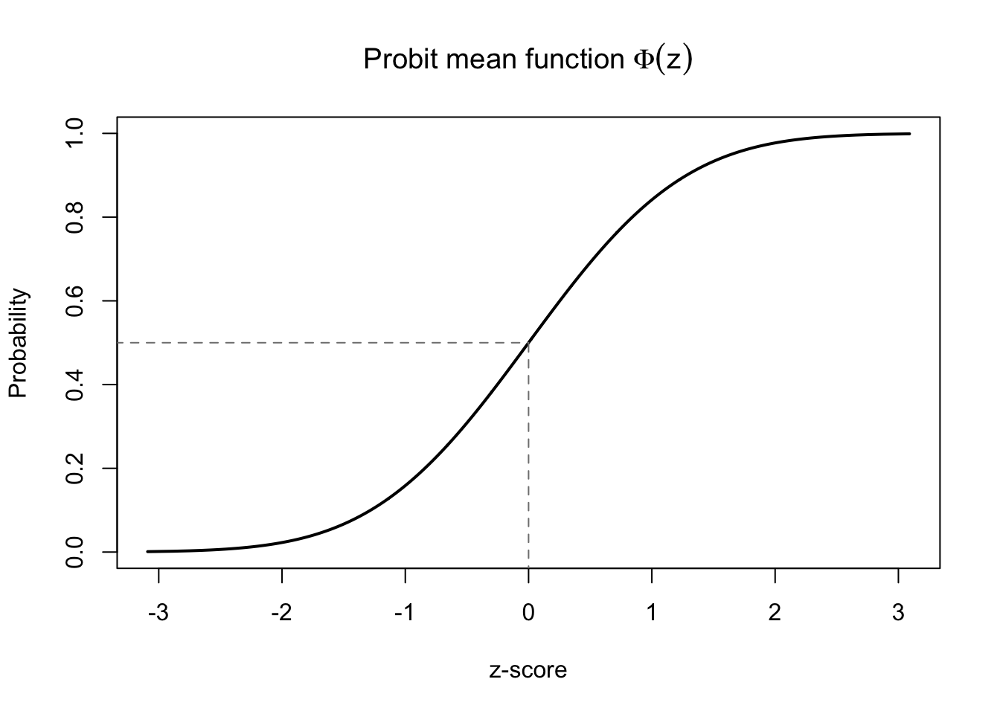

In this section I want to provide the reader with new tools which help in model selection between competing GLMs. Unlike linear regression, two GLMs can differ not just in their predictors but also in their distributional assumption and their choice of link function. To study these model selection techniques, we should learn a second link function for binary data, so that we can tell when it performs worse, or better, or equivalently to the logit link. To that end, I will first introduce the probit model, and then discuss GLM fit metrics and selection techniques.
The probit link
Logistic regression presumed a world in which changes among our predictors create linear shifts to the log-odds of success, or multiplicative shifts to the odds of success. In some instances, we can show that the logistic model is not just a good fit to the data, but in fact the correct functional form for the generating process which created the data.
However, many different real-world generating processes create binary data, and the inputs to these processes do not always relate linearly to the log-odds of success. Sometimes we can show that another link function would better explain how changes in our predictors affect the values of our response.
Motivation using latent variables
As an example, consider the following latent variables model.1 Suppose a random variable \(Z\) which is conditionally normally distributed, with a mean determined by another variable \(X\) and a variance of 1:2
Now define a new variable \(Y\) which takes on two values, 1 or 0, depending on whether \(Z\) is positive or negative, respectively:
\[y_i = 1\!\!1\{z_i \gt 0\}\]
Assume that, for some reason, we cannot directly observe the latent variable \(Z\), and only observe the variable \(Y\), which “flattens” the continuous response of \(Z\) to a binary outcome according to some threshold value. Some examples of this type of relationship include:
\(Z\) is a continuous measure of the viral load in my system following a disease exposure event; \(Y\) observes whether or not I contract the disease
\(Z\) is a continuous measure of how much I want a new TV with a certain set of features; \(Y\) observes whether I will buy one for $800
\(Z\) is a continuous measure of my satisfaction in my current job; \(Y\) observes whether I begin to apply for other jobs
We may conclude from the definitions of \(Z\) and \(Y\) that,
Where \(\Phi\) is the cumulative distribution function of the standard normal distribution.3 The normal CDF has the same nice properties as the logistic function: it maps an unbounded domain to a closed range of [0, 1], and it displays an S-shaped curve which creates a sense of diminishing returns as the inputs get very small or very large:
Code
plot(y=seq(0.001,.999,0.001),x=qnorm(seq(0.001,.999,0.001)),main=expression(paste('Probit mean function ',Phi(z))),ylab='Probability', xlab='z-score',type='l',lwd=2)segments(x0=0,y0=-1,y1=0.5,lty=2,col='grey50')segments(y0=0.5,x0=-4,x1=0,lty=2,col='grey50')

S-shaped curve of the probit mean function
Essentially, our predictors and our betas combine to predict a z-score, and the cumulative probability of that z-score is our fitted probability for\(Y=1\).
Let’s briefly compare the capabilities and interpretation of a probit regression with the logistic regression described in the sections above:
Classification. Just like the logistic regression, we can establish a classification boundary along the threshold (or line, or hyperplane) at which \(\hat{\mu} = 0.5\). We know that \(\Phi^{-1}(0.5) = 0\), that is, 0 is the median of the standard normal distribution. For a simple regression with one predictor, as before, we have \(0 = \hat{\beta}_0 + \hat{\beta}_1 x_{P_{50}}\) and so \(x_{P_{50}} = -\hat{\beta}_0 / \hat{\beta}_1\). No changes here!
Interpretation. In a probit regression, a one-unit shift in \(X\) changes the z-score for the cumulative probability of success by \(\hat{\beta}_1\). We don’t have any easy way to describe how this affects probability. In a logistic regression, we could say that a one-unit shift in \(X\) creates an \(e^{\hat{\beta}_1}\) proportional increase in the odds of \(Y\), but there are no clear analogues for probit regression… the best we can say is that a one-unit increase in \(X\) adds \(\hat{\beta}_1\) to the z-score of \(P(Y=1)\).
Hypothesis testing and confidence intervals for the parameters. Similar to logistic regression, we can perform hypothesis tests for whether each true slope \(\beta_j\) could actually be zero. Maximum likelihood estimation methods and the Central Limit Theorem continue to guarantee these solutions, just as with logistic regression.
Model selection and model comparison using AIC. Like logistic regression, probit regressions are typically fit by maximum likelihood methods, and we can continue to select and compare models using likelihood-base metrics including AIC.
Allow me to editorialize: when we choose probit regression over logistic regression, we often lose some coefficient interpretability and gain nothing special in return. There are relatively few occasions where the relationships in our data are either (a) significantly better described by probit regression than by logistic regression, or (b) better conceptualized as a shifting z-score rather than a change in the odds ratio. However, these occasions do happen, and within some domains probit models are more popular than logistic models.
Probit regression for classifying iris species
As an example, consider again the iris flower data introduced earlier. That data described three species of iris flowers by their physical measurements. Let’s build a model to classify whether a given iris specimen came from one species (Iris virginica) or the other two, using petal length and petal width as predictors:
Parameter
Estimate
z-score
p-value
\(\beta_0\) (Intercept)
-26.19
-3.58
<0.001
\(\beta_1\) (Slope on petal width)
6.26
2.97
0.003
\(\beta_2\) (Slope on petal length)
3.29
2.62
0.009
Remember that our linear predictor for each observation, \(\boldsymbol{x}_i \boldsymbol{\hat{\beta}}\), codes for a z-score from the standard normal distribution, and the cumulative probability \(\Phi(\boldsymbol{x}_i \boldsymbol{\hat{\beta}})\) will be our fitted mean. So when we see that the intercept is -26.19, we learn that irises with small petal widths and petal lengths are extremely unlikely to be Iris virginica specimens. (The cumulative probability to the left of \(z = -26.19\) is vanishingly small.) Even a moderately-sized petal with width 1.5 cm and length 4 cm would have a predicted z-score of \(-26.19 + 6.26(1.5) + 3.29(4) \approx -3.79\), which corresponds to a fitted probability of \(\Phi(-3.79) \approx 0.0001\).
Examining the slopes on petal width and petal length, we can see that a one-centimeter increase in either variable changes the linear predictor by 6.26 and 3.29, respectively. Shifting the z-score by 6.26 might drastically change the classification probability, or might make no difference. Consider:
If the linear predictor was previously -10, a one-centimeter increase in petal width would create a new linear predictor of -10 + 6.26 = -3.74. The old probability of being Iris virginica would have been \(\Phi(-10) \approx 10^{-23}\), and the new probability would be \(\Phi(-3.74) \lt 0.0001\), so we remain almost certain that the flower is from another species.
If the linear predictor was previously -3.13, a one-centimeter increase in petal width would create a new linear predictor of -3.13 + 6.26 = 3.13. This would dramatically change our classification probability from \(\Phi(-3.13) \approx 0.001\) to \(\Phi(3.13) \approx 0.999\)!
We can use our coefficients to define the two-dimensional classification boundary, a line which separates those iris flowers which the model would classify as Iris virginica from the rest. Recall that the 50-50 dividing line will have the property that \(\boldsymbol{x \hat{\beta}} = 0\), since \(\Phi(0) = 0.5\), or in other words, since the median of the standard normal distribution is 0.
\[\begin{aligned} \boldsymbol{x \hat{\beta}} = 0 &\longrightarrow \hat{\beta}_0 + \hat{\beta}_1 \textrm{Width} + \hat{\beta}_2 \textrm{Length} = 0 \\ &\longrightarrow \textrm{Length} = -\frac{\hat{\beta}_0}{\hat{\beta}_2} - \frac{\hat{\beta}_1}{\hat{\beta}_2} \textrm{Width} \end{aligned}\]
That equality allows us to define the line along which our classification probabilities are all 0.5. Any iris specimen on the “longer or wider” side of this line will be classified as Iris virginica, while any iris specimen on the “shorter or narrower” side of this line will be classified as another species.
Latent variable models presume that the variables we observe are transformations (often simplifications) of one or more unobserved variables with convenient distributions or properties. Even though we can’t directly observe the latent variables, guessing at their distributional form allows us to better understand the properties of the variables we do observe.↩︎
Since the constants \(\beta_0\) and \(\beta_1\) are arbitrary at this point, we can use a variance of 1 and a threshold value of 0 without endangering the conclusions that follow.↩︎
In other words, the left-tail probability for a z-score.↩︎